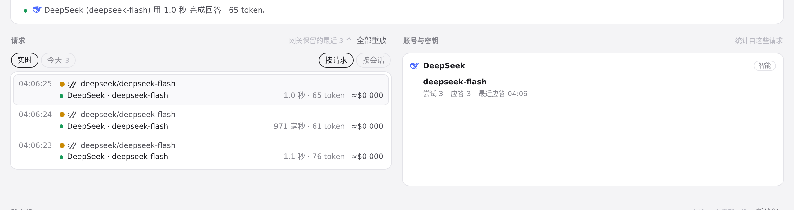
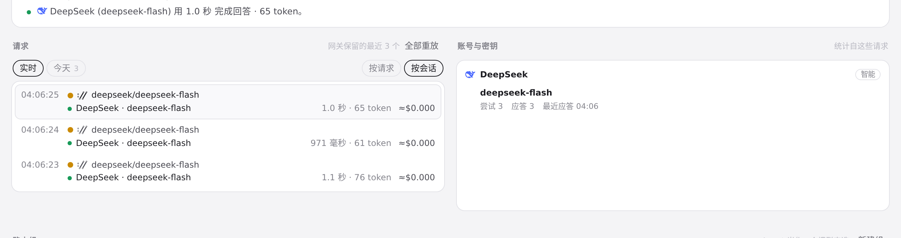

#859 界面预览
commit cd6a1f5 · 回到 PR · 路由页「最近请求」按会话分组时，对只有 Codex 后台提示词建议调用（ambient_suggestions / ambient_suggestion_safety）的分组，标题回退为「后台提示词建议」，并在标题 tooltip 中带上用途说明，会话 ID 仍留在 tooltip 里；同时补上了对应的中英文案。
红线是鼠标走过的轨迹，红色圆环是一次点击；底部文字是这一步在做什么。空格暂停，← → 逐段查看。

路由：按会话分组的标题 · 默认「按请求」时的最近请求列表

路由：按会话分组的标题 · 「按会话」分组后的列表，分组标题就是本 PR 改的地方（此处请求没有会话 ID，分不出组）